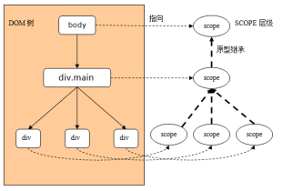

# angularJS知识梳理
### 1. 简介
Vue是一个MVVM框架，将视图，数据绑定在一起通过Vm（Vue实例化对象）来控制页面.
angular也是一个MVVM框架, 为数据提供双向绑定,dom指令等等.
angular 官方版本库下载:
[https://code.angularjs.org/](https://code.angularjs.org/)
### 2. 指令
#### 2.1 ng-app指令
声明应用程序,标记了angularJS脚本的作用域. 一个程序中必须要有该指令
#### 2.2 ng-model 指令, 双向绑定数据
用来双向绑定数据,将表单的数据绑定到angular应用程序中.
#### 2.3 ng-bind 指令 声明绑定数据.
它的简写方式{{msg}}可以直接用在元素中
代码
```
<!-- ng-app声明应用程序 -->
<div>
<!-- ng-model 用来给表单元素双向绑定数据 -->
<input type="text" ng-model="msg">
<!-- 简写方式{{msg}} -->
<p>简写方式:{ {msg}}</p>
<!-- ng-bind指令用来绑定数据, 表示给元素绑定"msg"变量 span便签内会显示msg变量的值 -->
<p ng-bind="msg" ></p>
</div>
```
#### 2.4 angular指令工作流程
当页面加载完毕，angularjs启动起来，首先会去页面中寻找ng-app指令，找到后初始化我们的应用程序
ng-app告诉angular我们这个应用是绑定的元素，所以我们以后绑定的指令只能够在ng-app所在的元素中生效
Angularsj找到ng-model指令，它将该指令对应数据绑定在该程序的作用域，
Angularjs找到ng-bind 或 简写的 {{msg}}指令，它将数据渲染到该元素内
Angularjs遍历完毕。视图与数据也就渲染出来了
#### 2.5 ng-init指令
给应用程序中的变量赋初值，多个变量用";" 注意定义多个变量不能用逗号，只能用分号";"
```
<!-- ng-init 可以初始化给数据赋值 -->
<div class="container" ng-app="app2" ng-init="haha='哈哈';xixi='嘻嘻'">
<div>
<input type="text" class="form-control " ng-model="haha" />
<span ng-bind="haha" class=""></span>
</div>
<div>
<input type="text" ng-model="xixi" />
<span class="text-danger">{{xixi}}</span>
</div>
</div>
```
### 3 module
module也是angular代码的入口，首先需要声明module，然后才能定义angular中的其他组件元素，如controller、service、filter、directive、config代码块、run代码块等。
```
<script type="text/javascript">
// 声明module, 参数1是ng-app的名称,参数2是模块的依赖.
var app = angular.module("app",[])
app.controller("main",function(){})
</script>
```
### 4 ng-controller 控制器
用来控制应用程序,类似vue中的组件\
两个参数:
第一个参数表示控制器的名称
第二参数表示控制器的构造函数
参数是你需要的数据，需要什么可以传递什么，这样在构造函数中就可以使用它，如果没有传递就无法使用
```
angular.module("app",[])
// 控制器,参数1是控制器名称, 参数2是控制器的构造函数,需要参数注入
.controller("main",function(){
})
```
#### 4.1 $scope 控制器的作用域
$scope：用来实现数据与视图的链接，使他们之间的桥梁，在$scope上定义的数据，可以用视图上，那么在视图上绑定的数据可以在$scope上获取到
$scope；是通过原型式继承实现

```
angular.module("app",[])
.controller("main",function($scope){
// $scope 是控制器的作用域,其属性含有控制器中的变量
$scope.msg = ""
})
```
#### 4.2 controller as 创建控制器的别名
别名设置的变量, 与通过$scope设置的变量互不干扰.
别名设置的变量通过$scope无法访问到,
$scope的变量, 通过this也无法访问到
```
//html
<div ng-app="app">
<!-- 使用 as 设置控制器的别名,可以通过别名来使用参数 -->
<div ng-controller="myController as ctrl">
<input type="text" ng-model="ctrl.msg">
<p>{{ctrl.msg}}</p>
</div>
</div>
// js
<script type="text/javascript">
angular.module("app",[])
.controller("myController",function($scope){
this.msgAs = ""
$scope.scp = ""
// console.log(ctrl); // 报错 ,作用域中无法访问别名
console.log(this,111);
console.log($scope,222);
console.log(this === $scope); // false
console.log(this.scp); //undefined
console.log($scope.msgAs); //undefined
})
</script>
````
### 5 ng-click="eventName" 定义事件
ng-事件名称="事件函数名"
如:
```
<div ng-controller="main">
<!-- 绑定数据,clickBtn为事件函数名可以传递参数 -->
<button ng-click="clickBtn('haha')">按钮</button>
</div>
<script type="text/javascript">
angular.module("app",[])
// $scope 是控制器的作用域,其属性含有控制器中的变量
.controller("main",function($scope){
// 定义事件函数,参数可以传递数据
$scope.clickBtn = function(msg){
console.log(msg);
}
})
</script>
```
### 6 ng-show ng-hide 控制元素的显隐
ng-show 表示显示元素指令:
值为true显示该元素，
值为false隐藏该元素
Ng-hide 表示隐藏元素指令:
值为false显示该元素
值为true隐藏该元素
```
<!DOCTYPE html>
<h tml lang="en">
<h ead>
<meta charset="UTF-8">
<title>Document</title>
</h ead>
<b ody>
<div ng-app="app">
<div ng-controller="main">
<!-- 点击按钮切换页面, togglePage为点击事件的方法名,要加括号才能执行 -->
<button ng-click="togglePage()">切换页面</button>
<!-- ng-show 控制元素的显示隐藏, 为true则显示, false则隐藏. ng-hide正好相反 -->
<div ng-show="showFirst">第一个页面</div>
<div ng-hide="showFirst">第二个页面</div>
</div>
</div>
<script type="text/javascript" src="angular.js"></script>
<script type="text/javascript">
var app = angular.module("app",[]);
// 控制器
app.controller("main",function($scope){
$scope.togglePage = function(){
$scope.showFirst = !$scope.showFirst;
console.log("111");
}
})
</script>
</b ody>
</h tml>
```
### 7 表达式 绑定数据
数据的绑定过程我们可以应用表达式
在表达式中我们不仅仅可以用运算符，还可以应用js提供的方法
> angular不建议用表达式,而建议用过滤器
### 8 过滤器
用来对绑定数据显示时候处理的
{{key | filter}}
这个竖线|，angular叫管道符号
```
<!DOCTYPE html>
<h tml lang="en">
<h ead>
<meta charset="UTF-8">
<title>Document</title>
</h ead>
<b ody>
<div ng-app="app">
<div ng-controller="main">
<!-- 插值中可以用表达式 -->
<p>{ {"面积是:" + width*height + "平方米"}}</p>
<!-- 插值中还可以用js方法 -->
<p>{ {"切换为大写" + word.toUpperCase()}}</p>
<!-- 使用过滤器 -->
<!-- 转为货币形式 -->
<p>价格是:{ {msg | currency}}</p>
<!-- 滤镜 转为json字符串 -->
<p>内容为 : { {product | json}} </p>
<!-- 字符串过滤器 -->
<!-- limitTo 只显示前几个字符 -->
<p>{ {msg | limitTo : 4}}</p>
<!-- uppercase lowercase -->
<p>{ {msg | uppercase}}</p>
<p>{ {msg | lowercase}}</p>
<!--
等价于下面的方法
不过angular建议使用过滤器, 不建议使用方法.
-->
<p>{ {msg.toLowerCase()}}</p>
<!-- 数字过滤器 -->
<!-- 把数字表示为每个字符以逗号分隔的形式-->
<p>{ {num | number }}</p>
<!-- 可以加一个数字表示要保留的小数位数 -->
<p>{ {num | number : 5}}</p>
<!-- orderBy 数组过滤器 -->
<!--
后面的参数1表示排序依据的属性. 参数2为布尔值,默认是false, true 倒序排列, false正序排列
-->
<p>{ {arr | orderBy : "name"}}</p>
<!-- date 日期过滤器 -->
<!-- 可以通过yy MM dd hh mm ss HH(24h制) hh(12小时制) 的形式来设置自己所需要的格式 -->
<div>{ {date}}</div>
<div>{ {date | date}}</div>
<div>{ {date | date : "yyyy年MM月dd日hh:mm:ss"}}</div>
<!-- 数组过滤器 -->
<!--
filter：对数组处理，提取符合条件的成员组成一个新数组返回
参数前面要加上冒号，例如：{{color | filter : 'o'}}
参数可以是字符串，带引号的
参数可以是变量，不带引号
参数还可以是函数，注意函数不要执行（不带括号）
-->
<div>{ {color | filter : "0"}}</div>
<!-- 参数变量 -->
<div>{ {color | filter : filterChar}}</div>
<!-- 参数函数名称,不加括号,在作用域中定义函数. -->
<div>{ {color | filter : firstCharIsUpper}}</div>
</div>
</div>
<script type="text/javascript" src="angular.js"></script>
<script type="text/javascript">
//创建angular 实例化对象 参数1 是angular对象的名称, 参数2是依赖的数组集合
var app = angular.module("app",[]);
//创建控制器
app.controller("main",function($scope){
// 设置控制器作用域中的变量
$scope.msg = "789";
$scope.product = {
color : "red",
price : "98",
}
$scope.width = 15;
$scope.height = 2;
$scope.word = "haha"
})
</script>
</b ody>
</ h tml>
```
### 9 自定义过滤器
定义
通过app提供的filter方法来定义过滤器，接收两个参数
第一个参数表示 过滤器的名称
第二个参数表示 过滤器的构造函数
构造函数必须返回一个函数，这个函数在每次数据更新时候执行，
构造函数只执行一次
返回的函数，可以接受过滤器使用时传递的参数，但是第一个参数永远是绑定的数据，后面的参数才是传递的参数，参数的顺序同使用时传递参数的顺序一致。
```
<input type="text" ng-model="msg">
<!-- 自定义过滤器, "myFilter" 自定义的过滤器名称, 后面可以加其他数据作为参数(用':'分割),会传递到过滤器构造函数返回的函数中 -->
<p>{ {msg | myFilter : 888 : 999}}</p>
<script type="text/javascript">
angular.module("app",[])
// 自定义过滤器
/**
* 参数1 是过滤器名称
* 参数2 自定义是过滤器的构造函数,只执行一次
*/
.filter("myFilter",function(){
/**
* 过滤器的构造函数需要return一个函数, 这个函数每次值改变都会执行
* 第一个参数是过滤器要处理的值(即绑定的数据)
* 后面的参数为过滤器使用时传递的参数
*/
return function(val,arg1,arg2){
//return 的值为过滤器作用后要渲染到页面的值.
return val + arg1 + arg2;
}
})
</script>
```
### 10 表单操作
#### 10.1 表单验证
通过表单的name属性可以进行表单的验证
对于表单验证下面4个属性最有用
$dirty 表示表单是否被用户输入过，输入过，值为true， 没有输入过值为false
$pristine 表示表单是否被用户输入过，输入过，值为false，没有输入过值为true
$valid 表示输入的值是否合法，合法值为true，不合法值为false
$invalid 表示输入的值是否合法，合法值为false，不合法值为true
```
<!DOCTYPE html>
<h tml lang="en">
<h ead>
<meta charset="UTF-8">
<title>Document</title>
</h ead>
<b ody>
<div class="app" ng-app="app">
<div class="container" ng-controller="main">
<!-- 表单在$scope作用域中可以通过name属性获取到其值 -->
<form name="regist">
<label for="">用户名：</label>
<!-- ng-model 用来绑定数据 required表示是必填项(h5属性) -->
<input name="username" type="text" placeholder="请输入用户名" ng-model="data.uname" required>
<label for="">手机号：</label>
<!-- ng-pattern 用来对值进行校验可以用正则 -->
<input name="telephone" type="text" placeholder="请输入手机号" ng-model="data.tel" ng-pattern='/^1\d{10}$/' required>
<label for="">地&emsp;址：</label>
<input name="address" type="text" placeholder="请输入地址" ng-model="data.address" required>
<label for="">邮&emsp;编：</label>
<input name="code" type="number" placeholder="请输入邮编" ng-model="data.code">
<div class="waring row form-group">
<!-- 提示用户名输入有问题，是说当用户名输入之后（$dirty）提示输入错误（$invalid） -->
<p ng-show="regist.username.$dirty && regist.username.$invalid" class="text-danger">用户名输入不正确</p>
<!-- 输入过手机号($dirty) 输入的是错误的格式($invalid) -->
<p ng-show="regist.telephone.$dirty && regist.telephone.$invalid" class="text-danger">输入手机号码格式不对</p>
<p ng-show="regist.address.$dirty && regist.address.$invalid" class="text-danger">输入的地址格式不对</p>
<p ng-show="regist.code.$dirty && regist.code.$invalid" class="text-danger">输入的邮编格式不对</p>
<p ng-show="checkRegisst" class="text-danger">请输入正确的信息</p>
</div>
<div class="row form-group">
<!-- 给提交按钮绑定了check函数 -->
<button class="btn btn-success" type="submit" ng-click="check()">提交</button>
</div>
</form>
</div>
</div>
<script type="text/javascript" src="angular.js"></script>
<script type="text/javascript">
var app =angular.module("app",[]);
app.controller("main",function ($scope) {
// 设置作用域中的变量
$scope.checkRegisst = false;
$scope.data = {}; //设置双向绑定的数据
//点击提交后的事件
$scope.check = function () {
if($scope.regist.$invalid){
$scope.checkRegisst = true;
}else{
$scope.checkRegisst = false;
}
}
})
</script>
</b ody>
</h tml>
```
### 11 表单的指令方法
### 11.1 ng-disabled
表示表单是否可以操作
### 11.2 ng-readonly
表单是否只读(不可操作)
### 11.3 ng-checked
针对复选框, 表示选项是否选中,值是布尔值
### 11.4 ng-change
监听表单内容的改变
值是一个函数名,加括号
```
<input type="text" ng-model="msg" ng-change="change()" />
```
### 11.5 ng-options
生成下拉列表
```
<select ng-model="data.currentOpts" class="form-control" ng-options="item for item in opts"></select>
<script type="text/javascript">
$scope.data = {
currentOpts : "上海"
};
$scope.opts = [
"上海",
"北京",
"广东",
"东莞"
]
</script>
```
### 11.5 ng-submit
值是函数名加括号
为form表单绑定submit事件,当点击表单中的submit按钮的时候,会触发该事件.
该指令需要绑定在form元素上
```
<form ng-submit="sub()">
<button type="submit">提交</button>
</form>
<script type="text/javascript">
angular.module("app",[])
.controller("main",function($scope,$http){
//执行函数
$scope.sub = function(){
$http({
method : "post",
url : "/biaodao"
})
}
})
</script>
```
### 11.6 ng-form
嵌套表单
当页面中有嵌套表单时,父表单不能获得子表单的name属性.
```
<!-- 父表单是parentForm -->
<form ng-submit="submit()" name="parentForm">
<input type="text" ng-model="msg1" ng-pattern="/^\d+$/" name="parentMsg">
<!-- ng-show来控制提示信息的显示隐藏 -->
<span ng-show="parentForm.parentMsg.$dirty && parentForm.parentMsg.$invalid">只能填数字</span>
<!-- angular中 父表单中嵌套子表单
直接在div标签加上 ng-form 属性即可. 这样子表单中的name属性将无法在父表单中直接获取,只能通过子表单来获取,
-->
<div ng-form="childForm">
<p>
<input type="text" ng-model="msg2" required name="childMsg">
<span ng-show="childForm.childMsg.$dirty && childForm.childMsg.$invalid">必填项</span>
</p>
</div>
<button type="submit">提交</button>
</form>
```
### 12 run方法
用来获取app并执行,在方法中可以访问根作用域
```
var app = angular.module("app",[]);
// run方法 参数是一个函数
// 在函数中通过可以注入参数$rootScope获取根作用域
app.run(function($rootScope){
// 在该方法中我们要处理根作用域，通过参数注入，将根作用域传递进来
$rootScope.msg = "哈哈"
})
```
### 13 angular的作用域
angular中ng-app的范围是 根作用域 通过在run方法中注入参数$rootScope可以获取
每个控制器 controller 都是一个子作用域. 子作用域通过在控制器的函数中注入$scope可以获取控制器的作用域
子作用域中的变量会先在子作用域中寻找值,如果没有则一级一级往上寻找,直到找到根作用域中.
### 14 ng- 绑定属性
### 15 ng-src="{ {imgSrc}}" 指令
当调用ng-src指令时，浏览器打开页面，浏览器不认识ng-src属性，所就不会发请求，那么当ng-src绑定的数据imgSrc有数据的时候，angular会把这个数据赋值给src属性，让img标签发送一个请求
```
<img ng-src="{ {imgSrc}}" alt="">
```
### 16 ng-href
当浏览打开页面时候，元素不具有href属性，就不具有链接行为，ng-href对这一现象做了优化，当ng-href绑定的数据加载成功后，将这一属性值，赋值给a标签的href属性，让a标签具有连接的行为。
```
<a ng-href="{ {taobaoHref}}">淘宝</a>
```
### 17 ng-class 绑定类名
是用来动态创建类的一个指令，它的值是一个对象，对象中的属性代表类的名称，属性值只能是boolean，
vue中采用 v-bind:class= 值可以是对象,也可以是数组
true的话，会将该类名添加到元素的class属性中;
False的话，会将该类名从该元素的class属性中删除;
```
<div ng-class="{red : x > 3, green : x <=3 }"></div>
```
### 18 ng-style 动态创建样式
用来动态创建样式的。，它的值是一个对象，对象中的属性代表css属性，值是css属性值，
```
<div ng-style="{background:'yellow',height:x*30 + 'px'}"></div>
<!-- 也可以用变量 -->
<div ng-style="boxStyle"></div>
```
### 19 ng-if 模板判断指令
模板判断指令，控制模板是否渲染,
当值为true渲染页面
当值为false将该元素从页面中删除
注意，angular中没有ng-else指令，可以通过ng-if模拟
```
<h1 ng-if="showPage">第一个页面</h1>
<h1 ng-if="!showPage">第二个页面</h1>
```
### 20 ng-switch 分支判断模板显隐
分支判断模板指令
当元素设置了ng-switch,就表明该元素是一个分支判断的模板,所有分支都要被包含在该元素内
我们通过on指令来设置判断的条件，所以ng-switch要和on指令一起使用
ng-switch-default表示默认值（也就是说其他条件不成立时候，该条件成立）
ng-switch-when=”key“：表示判断某一条件，当on的绑定的数据值为该分支对应的值的时候，我们走该分支
```
<!DOCTYPE html>
<h tml lang="en">
<h ead>
<meta charset="UTF-8">
<title>Document</title>
</h ead>
<b ody>
<div ng-app="app">
<div ng-controller="main">
<input type="text" ng-model="msg">
<!-- ng-switch 分支判断控制模板的显示隐藏 -->
<div ng-switch on="msg">
<h3 ng-switch-default>默认</h3>
<h3 ng-switch-when="first">第一个</h3>
<h3 ng-switch-when="second">第二个</h3>
</div>
</div>
</div>
<script type="text/javascript" src="angular.js"></script>
<script type="text/javascript">
var app = angular.module("app",[]);
app.controller("main",function ($scope) {
$scope.msg = ""
})
</script>
</b ody>
</h tml>
```
### 21 ng-repeat 重复渲染模板
循环渲染模板指令，
语法：ng-repeat=‘item in list’
内置变量
$index 表示循环索引值，注意，它是从0开始计数的
$first 第一次循环是true，其他次循环是false
$last 最后一次循环是true，其他次循环是false
$middle 除去第一次和最后一次值是true
$even 偶数次循环是true，奇数次循环是false
$odd 偶数次循环是false，奇数次循环是true
```
<!DOCTYPE html>
<h tml lang="en">
<h ead>
<meta charset="UTF-8">
<title>Document</title>
<style type="text/css">
li{
padding: 5px 0;
margin: 10px 0;
}
.gray{
background-color: #efefef;
}
.yellow{
background-color: yellow;
}
.pink{
background-color: pink;
}
</style>
</h ead>
<b ody>
<div ng-app="app">
<div ng-controller="main">
<ul>
<!-- ng-repeat 循环渲染模板-->
<!-- 在渲染时可以使用其内置变量$index.. 来具体操作每个模板 -->
<!-- 根据内置变量的值来设置类名,以及内容文字的内容 -->
<li ng-repeat="item in colors" ng-class={gray:$even,yellow:$first,pink:$last}>$index:{ {$index}}--{ {item}}--$first:{ {$first}}--$last:{ {$last}}--$middle:{ {$middle}}--$even:{ {$even}}--$odd:{ {$odd}}</li>
</ul>
</div>
</div>
<script type="text/javascript" src="angular.js"></script>
<script type="text/javascript">
var app = angular.module("app",[]);
app.controller("main",function ($scope) {
$scope.colors = ['red', 'yellow', 'green', 'blue', 'orange']
})
</script>
</b ody>
</h tml>
```
- $index:{{$index}}--{{item}}--$first:{{$first}}--$last:{{$last}}--$middle:{{$middle}}--$even:{{$even}}--$odd:{{$odd}}
### 22 ng-include 用来引入模板
有时候我们的模板会写在一个单独文件内，此时，我们可以通过ng-include将该模板文件引入进来
语法：ng-include="文件的路径名称" 注意：文件路径一定是一个字符串
```
<!-- 从单独的文件内引入模板 -->
<div ng-inclue="haha.html" ng-controller='haha'></div>
```